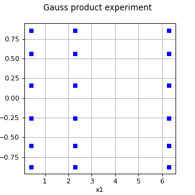

GaussProductExperiment¶
(Source code, png)

- class GaussProductExperiment(*args)¶
Gauss product experiment.
- Available constructors:
GaussProductExperiment(marginalSizes)
GaussProductExperiment(distribution)
GaussProductExperiment(distribution, marginalSizes)
- Parameters:
- marginalSizessequence of positive int
Numbers of points
 for each direction. Then, the total number of
points generated is
for each direction. Then, the total number of
points generated is  .
By default, the value of is equal to
.
By default, the value of is equal to  .
The default marginal size is defined in the
GaussProductExperiment-DefaultMarginalSize key of the
.
The default marginal size is defined in the
GaussProductExperiment-DefaultMarginalSize key of the ResourceMap.- distribution
Distribution
 of dimension
of dimension  with an independent copula.
with an independent copula.
See also
Notes
The Gauss product experiment is a tensor product experiment which uses Gauss points in each direction. Using the notations of the
TensorProductExperimentdocumentation, we have and
and  for every index
for every index  .
.For each marginal, the algorithm computes the family of orthogonal polynomials depending on the marginal distribution using the
StandardDistributionPolynomialFactoryclass. The input distribution must have an independent copula.Examples
>>> import openturns as ot >>> marginal_1 = ot.Exponential() >>> marginal_2 = ot.Triangular(-1.0, -0.5, 1.0) >>> distribution = ot.ComposedDistribution([marginal_1, marginal_2]) >>> marginalSizes = [3, 2] >>> experiment = ot.GaussProductExperiment(distribution, marginalSizes) >>> nodes, weights = experiment.generateWithWeights() >>> print(nodes) [ X0 X1 ] 0 : [ 0.415775 -0.511215 ] 1 : [ 2.29428 -0.511215 ] 2 : [ 6.28995 -0.511215 ] 3 : [ 0.415775 0.357369 ] 4 : [ 2.29428 0.357369 ] 5 : [ 6.28995 0.357369 ] >>> print(weights) [0.429018,0.168036,0.00626806,0.282075,0.110482,0.00412119]
In the following example [morokoff1995], we integrate a dimension 5 integrand with
 marginal probability density functions.
We use 7 nodes for each marginal, leading to a total of
marginal probability density functions.
We use 7 nodes for each marginal, leading to a total of  nodes
for the tensor product Gauss quadrature.
nodes
for the tensor product Gauss quadrature.>>> import openturns as ot >>> def g_function_py(x): ... value = (1.0 + 1.0 / dimension) ** dimension ... for i in range(dimension): ... value *= x[i] ** (1.0 / dimension) ... return [value] >>> >>> dimension = 5 >>> g_function = ot.PythonFunction(dimension, 1, g_function_py) >>> interval = ot.Interval([0.0] * dimension, [1.0] * dimension) >>> integral = 1.0 >>> print('Exact integral = ', integral) Exact integral = 1.0 >>> marginal_levels = [7] * dimension >>> distribution = ot.ComposedDistribution([ot.Uniform(0.0, 1.0)] * dimension) >>> experiment = ot.GaussProductExperiment(distribution, marginal_levels) >>> nodes, weights = experiment.generateWithWeights() >>> number_of_nodes = nodes.getSize() >>> print('Number of nodes = ', number_of_nodes) Number of nodes = 16807 >>> function_values = g_function(nodes).asPoint() >>> approximate_integral = function_values.dot(weights) >>> print('Approximate integral = ', approximate_integral) Approximate integral = 1.0040...
Methods
generate()Generate points according to the type of the experiment.
Generate points and their associated weight according to the type of the experiment.
Accessor to the object's name.
Accessor to the distribution.
getId()Accessor to the object's id.
Get the marginal sizes.
getName()Accessor to the object's name.
Accessor to the object's shadowed id.
getSize()Accessor to the size of the generated sample.
Accessor to the object's visibility state.
hasName()Test if the object is named.
Ask whether the experiment has uniform weights.
Test if the object has a distinguishable name.
isRandom()Accessor to the randomness of quadrature.
setDistribution(distribution)Accessor to the distribution.
setMarginalSizes(marginalSizes)Set the marginal sizes.
setName(name)Accessor to the object's name.
setShadowedId(id)Accessor to the object's shadowed id.
setSize(size)Accessor to the size of the generated sample.
setVisibility(visible)Accessor to the object's visibility state.
- __init__(*args)¶
- generate()¶
Generate points according to the type of the experiment.
- Returns:
- sample
Sample Points
 which constitute the design of experiments
with
which constitute the design of experiments
with  . The sampling method is defined by the nature of
the weighted experiment.
. The sampling method is defined by the nature of
the weighted experiment.
- sample
Examples
>>> import openturns as ot >>> ot.RandomGenerator.SetSeed(0) >>> myExperiment = ot.MonteCarloExperiment(ot.Normal(2), 5) >>> sample = myExperiment.generate() >>> print(sample) [ X0 X1 ] 0 : [ 0.608202 -1.26617 ] 1 : [ -0.438266 1.20548 ] 2 : [ -2.18139 0.350042 ] 3 : [ -0.355007 1.43725 ] 4 : [ 0.810668 0.793156 ]
- generateWithWeights()¶
Generate points and their associated weight according to the type of the experiment.
- Returns:
Examples
>>> import openturns as ot >>> ot.RandomGenerator.SetSeed(0) >>> myExperiment = ot.MonteCarloExperiment(ot.Normal(2), 5) >>> sample, weights = myExperiment.generateWithWeights() >>> print(sample) [ X0 X1 ] 0 : [ 0.608202 -1.26617 ] 1 : [ -0.438266 1.20548 ] 2 : [ -2.18139 0.350042 ] 3 : [ -0.355007 1.43725 ] 4 : [ 0.810668 0.793156 ] >>> print(weights) [0.2,0.2,0.2,0.2,0.2]
- getClassName()¶
Accessor to the object’s name.
- Returns:
- class_namestr
The object class name (object.__class__.__name__).
- getDistribution()¶
Accessor to the distribution.
- Returns:
- distribution
Distribution Distribution used to generate the set of input data.
- distribution
- getId()¶
Accessor to the object’s id.
- Returns:
- idint
Internal unique identifier.
- getMarginalSizes()¶
Get the marginal sizes.
- Returns:
- marginalSizes
Indices Numbers of points
for each direction.
- marginalSizes
- getName()¶
Accessor to the object’s name.
- Returns:
- namestr
The name of the object.
- getShadowedId()¶
Accessor to the object’s shadowed id.
- Returns:
- idint
Internal unique identifier.
- getSize()¶
Accessor to the size of the generated sample.
- Returns:
- sizepositive int
Number
 of points constituting the design of experiments.
of points constituting the design of experiments.
- getVisibility()¶
Accessor to the object’s visibility state.
- Returns:
- visiblebool
Visibility flag.
- hasName()¶
Test if the object is named.
- Returns:
- hasNamebool
True if the name is not empty.
- hasUniformWeights()¶
Ask whether the experiment has uniform weights.
- Returns:
- hasUniformWeightsbool
Whether the experiment has uniform weights.
- hasVisibleName()¶
Test if the object has a distinguishable name.
- Returns:
- hasVisibleNamebool
True if the name is not empty and not the default one.
- isRandom()¶
Accessor to the randomness of quadrature.
- Parameters:
- isRandombool
Is true if the design of experiments is random. Otherwise, the design of experiment is assumed to be deterministic.
- setDistribution(distribution)¶
Accessor to the distribution.
- Parameters:
- distribution
Distribution Distribution used to generate the set of input data.
- distribution
- setMarginalSizes(marginalSizes)¶
Set the marginal sizes.
- Parameters:
- marginalSizessequence of positive int
Numbers of points
for each direction.
- setName(name)¶
Accessor to the object’s name.
- Parameters:
- namestr
The name of the object.
- setShadowedId(id)¶
Accessor to the object’s shadowed id.
- Parameters:
- idint
Internal unique identifier.
- setSize(size)¶
Accessor to the size of the generated sample.
- Parameters:
- sizepositive int
Number
of points constituting the design of experiments.
Only available in dimension 1.
- setVisibility(visible)¶
Accessor to the object’s visibility state.
- Parameters:
- visiblebool
Visibility flag.
 associated with the points. By default,
all the weights are equal to
associated with the points. By default,
all the weights are equal to  .
.Examples using the class¶

Create a polynomial chaos metamodel by integration on the cantilever beam


{kind=link}